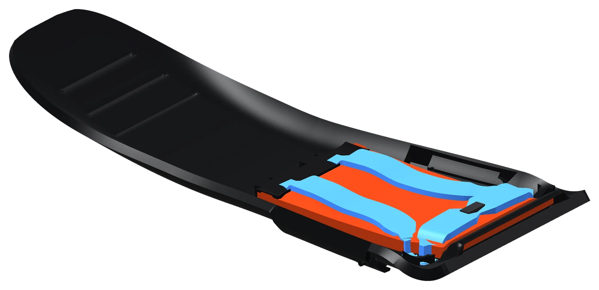
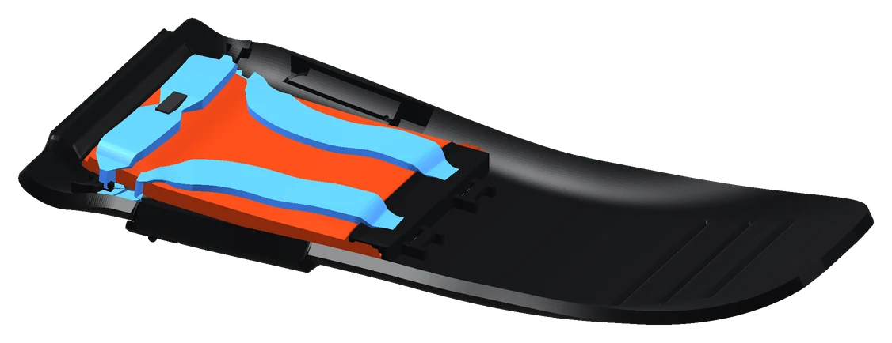
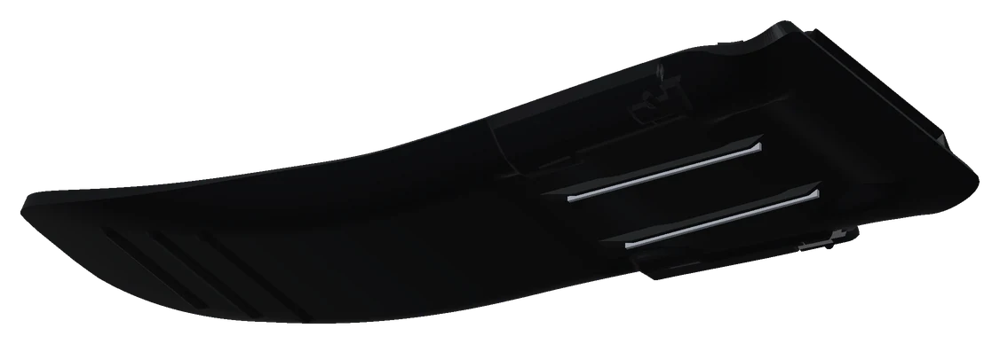

Kinder-Rennbob · Jugend forscht
Ein Rennbob für Kinder bis etwa 1,55 m – gedruckt aus einer einzigen 4-mm-Schale, mit Edelstahlkufen. Die Bremsgriffe liegen glatt in der Seitenwand und klappen erst heraus, wenn man daran zieht.
Bremse & Lenkung
In Ruhe ist der Griff ein Stück der Innenwand und die Schaufel ein Stück der Unterseite. Hochziehen wie eine Handbremse – die Schaufel fährt aus. Einseitig gebremst, lenkt der Bob.

Aufstieg
Sitzplatte zum Rücken, Nase nach oben. Zwei Schultergurte und ein Hüftgurt an vier angeformten Gurtbrücken halten den Bob ruhig am Körper. Am Heck polstert ein Gummi-Kantenschutz – und die aufgebogene Nase schirmt den Kopf ein wenig vor Schnee ab.


| Maße | 1000 × 400 mm, Taille 320 mm |
|---|---|
| Wanne | Schale 4 mm (Heck 6 mm), PETG schwarz, 3D-Druck |
| Kufen | PETG-Fuß mit Edelstahlschiene 4 × 10 × 230 mm, bei ±60 mm |
| Bremse | Wippe 130 / R36 mm, 70° Hub, Schaufel 31 mm breit, ≈ 18 mm Eingriff |
| Sitz | EVA-Platte 250 × 420 × 20 mm (±10 mm), Rampe und Lendenrolle in der Wanne |
| Tragen | 2 Schultergurte, Hüftgurt, Brustgurt an 4 Gurtbrücken; Gummi-Kantenschutz am Heck |
| Ausgelegt für | Kinder bis etwa 155 cm und 45 kg (6./7. Klasse) |
Alle Unterlagen sind frei zugänglich: Konstruktionsplan mit Stückliste und die Druckdateien für den Prototyp im Maßstab 1:10.